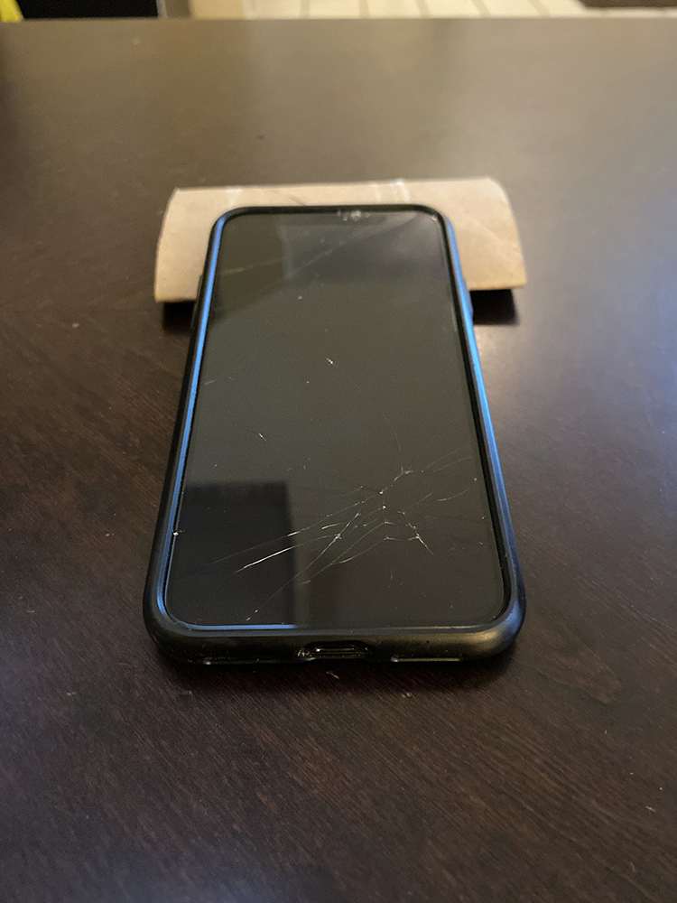
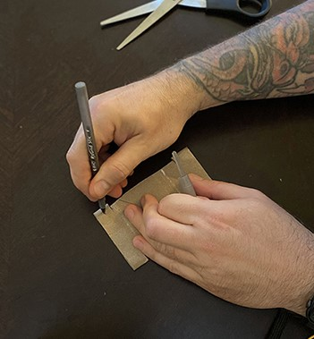
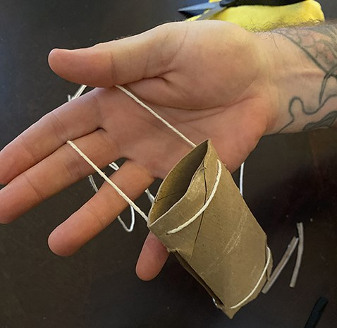
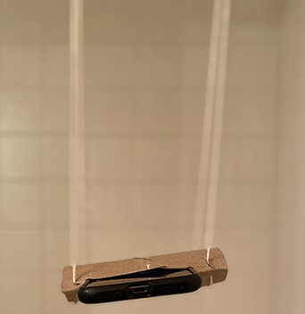
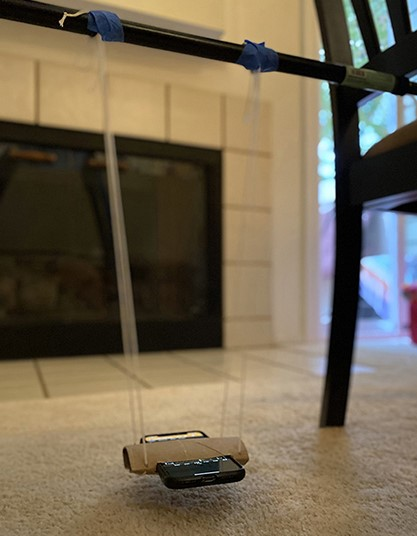
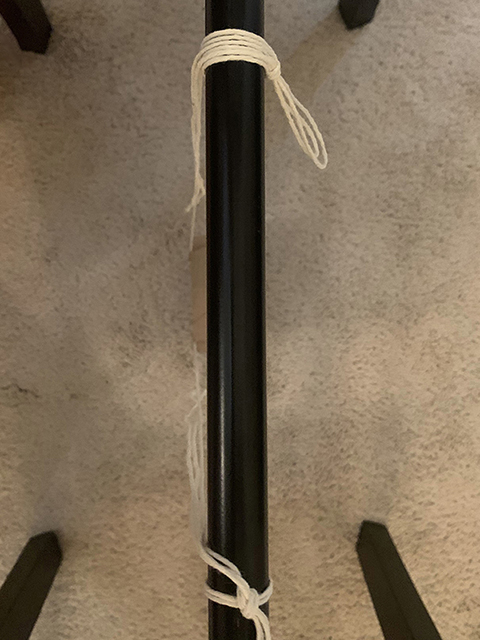

# Lab 2 Pendulum Week 1
Simple harmonic motion is characterized by a system whose acceleration is negatively proportional to its position. The following differential equation:
where is the coordinate for position. is known as the angular frequency and is defined as the following:
where is the period of the oscillator.
This definition of is true for all simple harmonic oscillators.
You may have seen Equation 1 solved in a lecture class before. We won’t go through it here, but we will remind you that the solution gives position as function of time . The equation for position is given in Equation 3 below.
is the amplitude of the periodic motion, but also marks the initial position.
A simple pendulum is one that is simply a point mass at the at the end of a massless string of length . A simple pendulum that is released from a small initial angle ( or less) exhibits simple harmonic motion. For the case of the pendulum it is the angular position given by that follows Equation 1. That is to say:
You may also recall that for a simple pendulum , where is the acceleration due to gravity and is the length of the pendulum. This has been inserted in Equation 4 above.
Lastly this means that angular position of the pendulum is given by:
Question 1
Use the information above and Equation 2 to write an equation for the period of the pendulum.
In this experiment you will be using your phone to measure accelerations. Therefore we should discuss what types of accelerations your phone will undergo as it swings back and forth. In a pendulum, the motion of the mass (your phone) moves on an arc of a circle. Therefore we can use our knowledge of circular motion.
Objects moving in a circle are said to have angular velocity, denoted as . This angular velocity is defined as the rate of change of the angular position.
Recall from Physics 2 that the acceleration an object experiences when it moves in an arc or circle at varying speed, has two components. One points in the radial direction (towards the pivot). This we will call or for short. The other points in the direction of motion tangent to the circle. This is sometimes called but for this lab we will call it .

The equation for both of the accelerations is given below:
In this lab you will turn your phone into a pendulum. You will suspend it in some way (we provide some ideas below) and then use the “Accelerometer without g” to measure the phone’s acceleration along all three axes while your phone swings back and forth. Figure 3 shows one such setup. We will use the acceleration data to measure the period of the pendulum.
Typically, when measuring the period of the pendulum, you would measure the angular position as a function of time. Then from those data you would calculate the period of the pendulum.

Since we are measuring the period of the acceleration and not the angular position, we need to understand the relationship between the two. In Figure 4 you can see the how the net acceleration vector changes with time. Notice that this change is periodic. Also notice that at the bottom of the swing the acceleration is pointed entirely radially, and at the top of the swing it is pointed entirely tangentially.
This indicates that both and have some sort of periodic behavior, but it is not a given that the period of either acceleration would match that of the angular position. We can get some intuition by watching the animation, however. Notice that it takes one full swing of the pendulum for to point in the same direction, while points radially twice in one full swing.
Exercise 1
Assume that the angular position of the pendulum is given by Equation 5 above.
Question 2
Derive the equation for the radial acceleration of the pendulum as a function of time by using Equations 5 and 7. Show your work.
Question 3
Derive the equation for the radial acceleration of the pendulum as a function of time by Equations 5 and 8. Show your work.
Question 4
a) What is the relationship between the period of and the angular position?
b) What is the relationship between the period of and the angular position?
c) Which should you use to measure to angular position of of the pendulum?
Recall that the radial acceleration vector always points towards the pivot. The tangential acceleration points in the direction of motion (tangent to the circular arc).
Figure 5 shows how the coordinate system for your accelerometer moves with your phone.

Question 5
Build a list that identifies which axis of your accelerometer is the long, short, and screen axis, and which of the two correlate to the and vectors.
This is just an example:
Long Axis is x = , etc.
So far, most of our discussion has been based on a simple pendulum. That means a point mass at the end of massless string.
Your phone is not a point mass, but are we able to treat it as one? The answer is yes, but only under certain conditions.
You were taught in Physics 2 that for a physical pendulum (not a simple pendulum), the angular frequency is given by:
Where is the moment of inertia for the physical pendulum.
Exercise 2
Question 6
Verify that when we use the moment of inertia for a simple pendulum (point mass), we get back out the we expect.
To figure out the moment of inertia for your phone we will need to do two things.
Where is the length of one of the edges of your phone.
Question 7
Use the parallel axis theorem and equation 10 to write the equation moment of inertia of your phone about the pendulum pivot. Though some of you may prefer Android, call it .
Question 8
a) Under what condition does your phone behave as a simple pendulum. Hint: Consider the ratio of .
b) If your phone had a length of 8 cm and the pendulum a length of 50 cm, what would be the percent difference between the period of an ideal simple pendulum of 50 cm, and that of your phone pendulum.
Exercise 3
DISCLAIMER - You will be using your phone to take data, and this can sometimes lead to accidents. Please use due care in handling your phone during this experiment.
In this experiment you will be using your phone to measure the acceleration in the x, y, and z axes without gravity. You will build an apparatus and take data. Include a picture of your setup if you can!
While you may be able to achieve a pendulum without them, we recommend using the additional materials as well. This guide will assume that you have them.

[INSERT ANIMATED GIF HERE]








Note: I added tape after the second photo to ensure that everything would stay in place.
Exercise 4